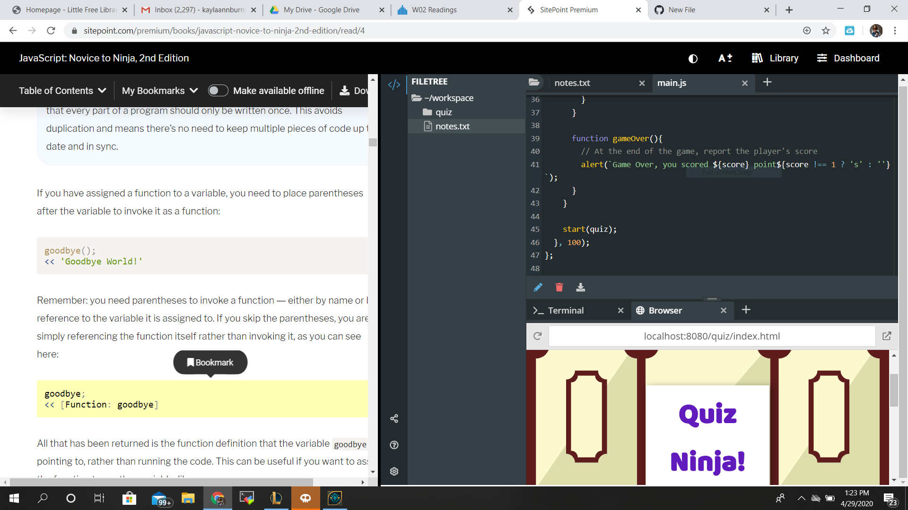

Week 02
1)Readings
How do I use the sandbox!? I asked my classmates and they didn't know either.
Aha, I figured it out. So you need to click the + button and Browser.

I think how they structured their example within Ch.4 was odd but maybe I need to read a different chapter to understand.
2)Activity
Austin created the document and we went over it using Zoom. He completed the entire assignment as practice and showed a very nice calculator.
Then we started from scratch to create a document together. I helped the team use .isinteger for the function.
3)Report
Type typed it up.